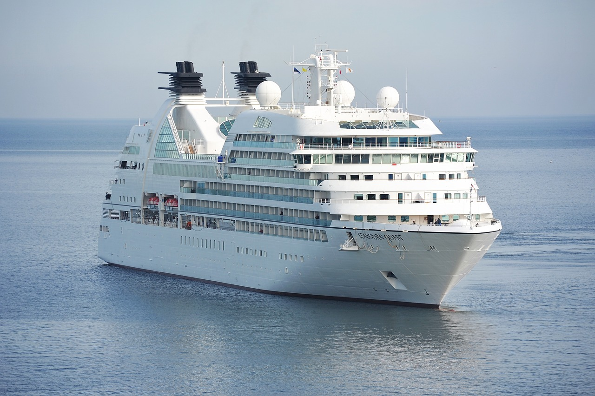
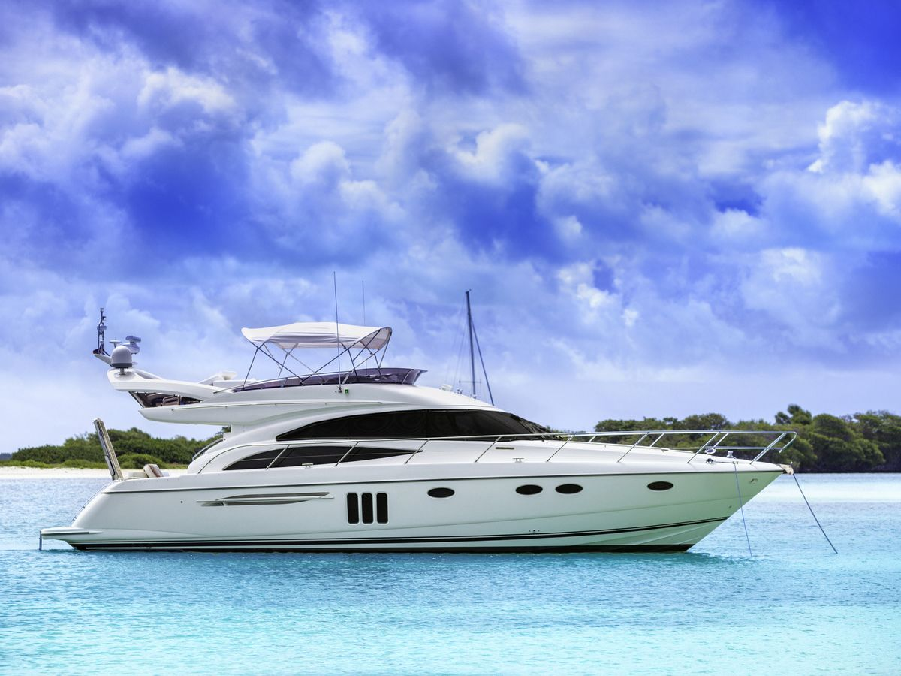
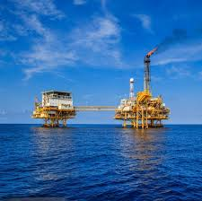

Introduction to Ships, Boats, and Offshore Structures
The Importance of Ships in Global Trade

Ships are the workhorses of global trade, carrying approximately 90% of the world's goods. The versatility of ships allows for the transportation of a wide range of cargoes, including:
- Container ships: Designed to carry standardized containers, they enable efficient and secure transportation of various goods.
- Bulk carriers: These ships transport bulk commodities like coal, iron ore, and grains.
- Tankers: Specialized for carrying liquid cargoes such as crude oil, petroleum products, and chemicals.
- Roll-on/roll-off (RoRo) ships: Designed to transport vehicles and machinery.
Without ships, the global economy would come to a standstill, highlighting their indispensable role in connecting markets and enabling international trade.
The Versatility of Boats

Boats are smaller vessels that serve a wide range of purposes, from recreational activities to specialized professional tasks. They include:
- Fishing boats: Essential for the fishing industry, these boats vary in size and design, from small trawlers to large factory ships.
- Sailing boats: Used for sport, leisure, and sometimes long-distance travel, sailing boats harness the power of the wind.
- Speedboats: Designed for high speed, they are used in racing, rescue missions, and recreational activities.
- Ferries: Transport people and vehicles across short distances, playing a vital role in local transportation networks.
- Workboats: These include tugboats, pilot boats, and supply vessels, crucial for various operations in ports and offshore facilities.
Boats are characterized by their agility, adaptability, and the variety of their applications, making them an essential part of maritime activities.
Offshore Structures: Harnessing Ocean Resources

Offshore structures, including oil and gas platforms, wind farms, and research stations, allow us to harness the vast resources of the ocean. These structures are engineering feats, designed to withstand harsh marine environments while providing a stable base for various operations.
Types of Offshore Structures
- Fixed Platforms: These structures are anchored directly to the seabed and are typically used in shallow waters. They include jacket platforms and gravity-based structures.
- Floating Platforms: Used in deeper waters, these platforms are not fixed to the seabed. Types include semi-submersibles, FPSOs (Floating Production, Storage, and Offloading units), and TLPs (Tension Leg Platforms).
- Subsea Systems: These are installed on the ocean floor and are used for tasks such as oil and gas extraction, where the surface infrastructure is not viable.
Design Principles of Ships, Boats, and Offshore Structures
The design of ships, boats, and offshore structures is a complex process that involves various engineering disciplines, including naval architecture, marine engineering, and structural engineering. Key considerations in the design process include:
- Hydrodynamics: Understanding the interaction between the structure and water to ensure stability, safety, and efficiency.
- Materials: Selecting materials that can withstand the corrosive marine environment and provide the necessary strength and durability.
- Structural Integrity: Ensuring that the structure can handle the loads and stresses encountered during operation, including extreme weather conditions.
- Safety: Implementing safety features and protocols to protect the crew, cargo, and environment.
Technological Advancements
Advancements in technology have revolutionized the design, construction, and operation of ships, boats, and offshore structures. Some notable innovations include:
- Computer-Aided Design (CAD): Enhances precision and efficiency in the design process.
- Simulation Software: Allows engineers to model and test the performance of structures under various conditions.
- Automation and Robotics: Improve operational efficiency and safety, particularly in hazardous environments.
- Renewable Energy Integration: The development of offshore wind farms and wave energy converters contributes to sustainable energy solutions.
Conclusion
The world of ships, boats, and offshore structures is vast and intricate, reflecting the ingenuity and expertise of engineers and designers. As we continue to explore and utilize the ocean's resources, the importance of these structures will only grow, driving innovation and shaping the future of the maritime industry.
In future blog posts, we'll delve deeper into specific types of ships, boats, the design and construction process of offshore platforms, and the latest technological trends shaping this dynamic field. Stay tuned for more insights and discoveries from the world of naval architecture and ocean engineering!